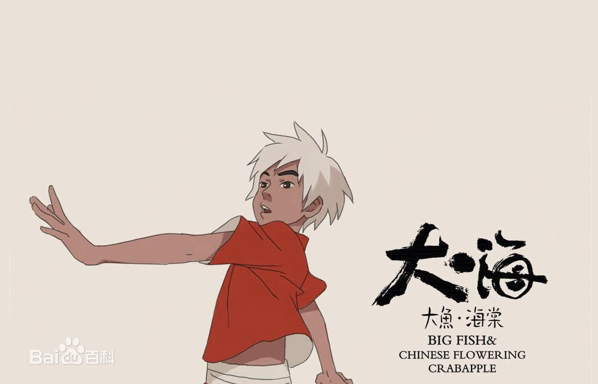
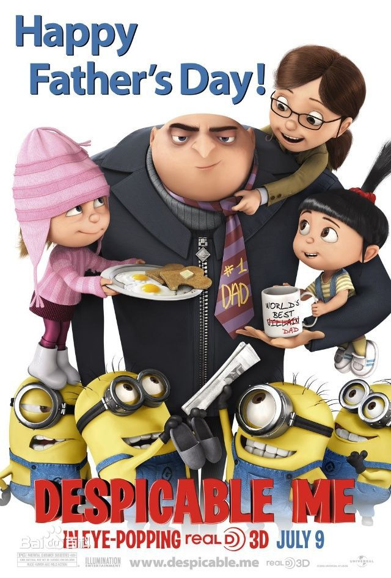
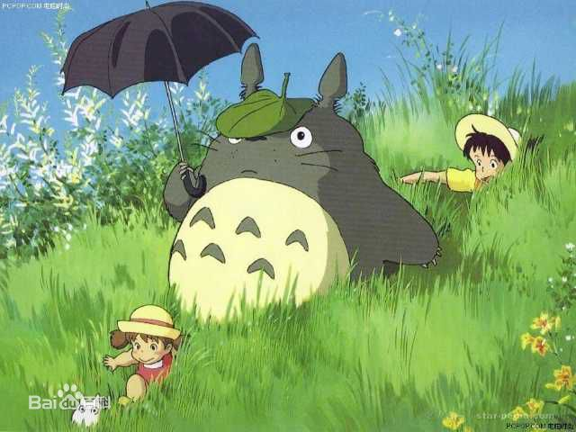
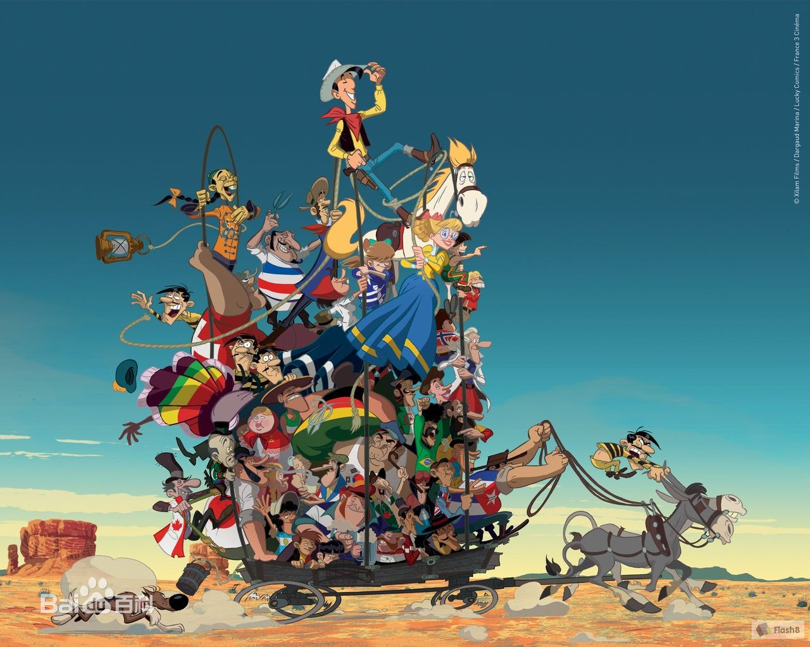

动画简史两万五千年前的石器时代洞穴上的野牛奔跑分析图，是人类试图捕捉动作的最早证据，在一张图上把不同时间发生的动作画在一起，这种"同时进行"的概念间接显示了人类"动"的欲望。文艺复兴时期，达·芬奇画作上的人有四只胳膊，表示双手上下摆动的动作；中国绘画史上，艺术家有把静态绘画赋予生命的传统，如南朝谢赫的"六法论"中主张"气韵生动"。 [2] 清代蒲松龄的《聊斋志异》中，"画中仙"人物走出卷轴同样体现了古人对活动画面的诉求。这些和动画的概念都有相通之处，但真正发展出使画上的图像动起来的功夫，还是在欧洲。 |
中国动画中国动画始终致力于创作一条具有本国特色的道路，坚持民族绘画传统，在改革开放以后，世界动画的大潮中也未放弃这一宗旨。动画片中洋溢着活泼清新的气息，给人以美的启迪。同时又十分注重教化意义，在动画片的创作中秉承"寓教于乐"，使动画片不致流于肤浅的纯娱乐搞笑。在影片类型上具有代表性的中国动画就是水墨动画。 |
美国动画美国动画在世界动画史上占有重要的地位，引领着世界动画片的潮流和发展方向，一向注重高科技的应用与高质量的追求。以剧情片为主，多以大团圆结局，悲剧性的影片很少，特别注重细节的刻画，做到了雅俗共赏，适合绝大多数观众的审美口味。人物造型设计规范，与生活中的原形差别不大。动物形象大都作大幅度的夸张，大头、大眼、大手、大脚，成为被世界各国广泛借鉴的卡通模式。大量运用数字技术与电影技术结合，使画面更趋逼真形象，达到完美的画面效果。同时较完善的动画产业善于推出动画明星。 |
日本动画日本动画作品非常偏好超现实主义题材，常与日式漫画紧密联系。在科技发达的当下，日本仍然坚持这采用传统的手工绘制的方法，致力于研究动画叙事语言的研究。为提高工作效率，采用了只让说话者的口型发生变化的"口动作画法"；将一组连续动作的画面反复使用的"保存备用法"等方式制作。帧率方面通常是8张绘画（"三格拍摄法"）来表现，以此方式可以减少作画数量。作品内容多展示复杂的人物关系、故事情节以及影片主题。 |
欧洲动画欧洲动画较少生产动画连续剧，而是喜欢在动画电影上进行试验和探索，通常把欧洲的动画作品称为"动画艺术短片"。欧洲动画片把重点放在讲故事上，试图在有限的时间内表达丰富感情和无限哲思。以精炼的手法表现主题与内容，以独特的构图和色彩勾勒出情绪的波动。欧洲动画的创新性明显，不少创作者把哲学、美学等艺术思潮带入到动画的创作中。创新性主要体现在题材创新和技巧创新上。在技巧上，画面追求简约、怀旧，更多的追求内容上的饱满。同时特别专注于动画制作技法的创新。如法国动画大师亚历山大·阿雷克塞耶夫的针幕动画。 |